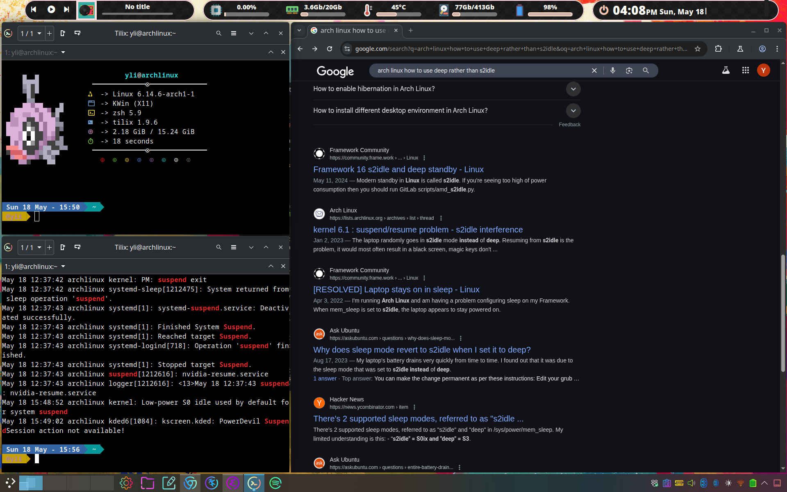
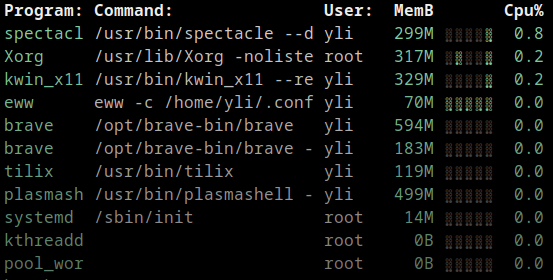
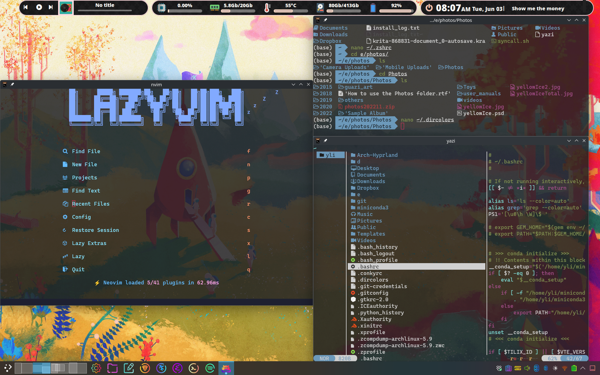

小霸王机器学习机配置
mangowc
细节看这篇
我的当前主力窗口管理器，按照官 网装。作者是中国人，所 以可以直接抄fcitx作业，各种配置也比较对我胃口，所以我去直接拿他的 dotfile修改。唯一遗憾是 尚未支持数位板，作者本人没有这个需求和设备，现在有个第三方pull request 等merge，也许以后版本会支持。
KDE(自带kwin)
兼容性大爷。KDE plasma出厂可用，图形界面点鼠标就能实现不少花里胡哨的配 置，所以作为基本的傻瓜型窗口管理器很合格。另一个选择是xfce。
plasma自带的kwin能满足基本的平铺窗口管理，依靠几个快捷键来把选定窗口放 到事先设定好的平铺格子里。另外emacs, konsole本身就带平铺功能，不依赖于窗 口管理器。
eww+polybar（已过气）
有很多作业抄。我看上了这个github
repo的配置。
这个repo是eww+bspwm的组合，效果图非常漂亮，但我需要的只有eww，所以把
autostart里不相关的部分删掉，并让kde的autostart跑这个脚本。另一个需要
改动的是eww的样式，因为跟当前显示器相关，直接抄的作业不一定适合。我改
了边界留白。其中:y "0px"删掉顶部留白，:distance "50px"使得bar和下
面窗口之间正好有一点空隙。在以下这样的段落里改：
;; Central bar
(defwindow bar_center
:geometry
(geometry
:anchor "top center"
:x "0px"
:y "0px"
:width "930px"
:height "50px")
:stacking "bg"
:reserve
(struts
:distance "50px"
:side "top")
...
最终效果，香蕉是鼠标指针

最新配置在github
系统资源占用

可以看出，plasma本身没有太夸张，X，eww，kwin就贡献了不少。brave浏览器 也占了可观的一部分，但还是比chrome好多。如果不做任何特殊任务，基本内存 消耗大约3-4G。如果要使用IDE或者大部头应用，就另说了。
waybar
建议到mangowc作者的repo 去抄作业。
zsh
火起来的bash替代品，智能很多，插件也很多。我忘记从哪里装的了，但是官网 是这里
比较流行的主题是agnoster，我的小修改是删掉用户登录信息。在.zshrc里末尾 加上
prompt_context() {}
kitty
加了透明背景，并且把shell改成了zsh。在.config/kitty/kitty.conf写
background_opacity 0.85
shell zsh
配置git
- 首先需要拿到access token。进入Settings -> Developer Settings -> Personal access tokens。我选择的是Personal access tokens (classic)
git config --global credential.helper store。
如果遇到权限验证的问题，按照这篇解决，记得用基于url的repo
steam
默认的安装没有问题，但是显卡要处理一下，nvidia的。一进去卡成狗，结果是 独显没认出来。查看：
nvidia-smi
正常情况应该会吐出一堆数据，但我的报错，说driver library version mismatch，于是重装：
sudo pacman -S nvidia-dkms nvidia-utils
sudo reboot
重启之后就好了，博德之门3跑起来了。花了半个多小时捏了个女装大佬德鲁伊 开局，五分钟初见杀，走两步就挂了。
另一个问题是，图像显示像素化严重并且颜色不对，launch option加上：
--graphics Vulkan
重启游戏
中文
用fcitx，记得要fcitx5，有最新qt支持的。自从kde plasma换成wayland后，突 然只有浏览器里能切换了，解决办法是
# /etc/environment
GTK_IM_MODULE=fcitx
QT_IM_MODULE=fcitx
XMODIFIERS=@im=fcitx
SDL_IM_MODULE=fcitx
GLFW_IM_MODULE=fcitx
或者
# ~/.xprofile
export XIM=fcitx
export XIM_PROGRAM=fcitx
export GTK_IM_MODULE=fcitx
export QT_IM_MODULE=fcitx
export XMODIFIERS="@im=fcitx"
eval `dbus-launch --sh-syntax --exit-with-session`
exec fcitx &
我两个都改了，重启电脑就好了。可能只需要改一个。
终端下的文件夹背景色
默认配置下，ls如果遇到权限过宽的文件夹（比如777），背景会被高亮。这对 于强制开放windows分区共享的双系统就很不方便。可以按照这个答 案 解决。
同时也需要改变zsh自动补全用采用的配色：
zstyle ':completion:*' list-colors "${(s.:.)LS_COLORS}"
就清净了，没有烦人的高亮色了
emacs
透明背景如下实现：
(set-frame-parameter nil 'alpha-background 85)
(add-to-list 'default-frame-alist '(alpha-background . 85))
nano
是的，nano也可以配置，比如语法高亮，自动换行等等。配置文件是
/etc/nanorc，高亮参考这
里。我还安
装了nano-syntax-highlighting包，也许不是必须的。
yazi
建议直接搜最新的文档。主题搭配可以参考这 篇
dotfiles管理
使用chezmoi，很方便。
登陆管理器
推荐ly，按照archlinux wiki。
其它
有些程序在图形界面可以设置透明背景，比如vscode通过插件，konsole,tilix， 就不赘述了。
一系列操作完毕后，透明背景达成，可以随时看到一点点好看的桌面背景。
最终效果

不折腾不出问题，一折腾就出的新问题
待解决：任何tilinig wm都无法使用，而且装来装去还把SDDM搞坏了
现状是，SDDM下无法选择window manager/desktop environment，只剩个plasma x11光杆司令。出现过的另一个问题是，登陆进去啥也不能干，包括使用网上搜 到的热键也没有响应。研究一番发现，这个是两个问题的组合，1.tiling WM无 法使用，2. .xinitrc被修改并默认进去那个不能使用的wm。既然如此，就修改~/.xinitrc
#!/bin/sh
exec startplasma-x11